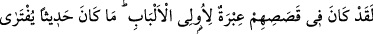
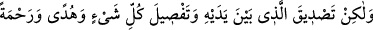
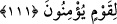

gelecek?!” dediler.” (el-Bakara, 2/214)
Âyetteki “zan (sanmak)” ile beşer olmaları gereği gönle gelen ve kalbe doğan,
muhtemel iki şıkkından birini diğerine tercih edemediği vesveseye benzer durumlar
kasdedilmiştir. Çünkü başka bir tür bir zan, müslümanlar için bile câiz değilken,
mahlûkat arasında Rablerini en iyi tanıyan ve O’nun verdiği sözden caymaktan
münezzeh olduğunu en iyi bilen peygamberler için nasıl câiz olur?
Fakat “suçlular topluluğundan azâbımız” başlarına geldiği zaman “asla geri
çevrilmez.”
et-Te’vîlâtü’n-Necmiyye’de şöyle der: “Nihâyet peygamberler ümidlerini yitirip de
kendilerinin yalana çıkarıldıklarını sandıkları sırada onlara yardımımız gelir ve
dilediğimiz kimseler kurtuluşa erdirilir” ifadesi, Allah’ın yardımının peygamberleri
sıkıntıdan kurtaracağına, yalanlayan ümmetleri ise azabla helak edeceğine işarettir.
Sonra bu mânâ, şu ifadeyle te’yid edilmiştir: “(Fakat) suçlular” yani yalanlayıcılar
“topluluğundan azabımız asla geri çevrilmez.” Tersinden mânâsı ise ‘Bizim azabımız
itaatkar kullarımızdan geri çevrilir.’ şeklindedir.”
111. Andolsun onların kıssalarında akıl sahipleri için ibret vardır. (Bu Kur’an)
uydurulabilecek bir söz değildir. Fakat o, kendinden öncekileri tasdik eden, her şeyi
açıklayan (bir kitaptır); îman eden toplum için bir hidâyet ve rahmettir.
“Andolsun onların” peygamberlerin ve ümmetlerinin “kıssalarında” yani
haberlerinde “akıl sahipleri için” yani duyulara hislere meyil ve ülfet etme şâibesinden
uzak akıl sahipleri için “ibret vardır.”
Bahru’l-ulûm’da şöyle der: Yâni kendilerinden sonra gelecek akıl sahiplerinin öğüt
alacağı bir ibret vardır. Onlar bu sayede Allah’ın öncekileri helak ve azab etmesine
sebep olan benzer davranışlara cür’et edemezler. Aksine benzerlerini yapmaktan uzak
dururlar. Çünkü kendileri de benzer bir davranışta bulundukları zaman aynı ceza kendi
başlarına da gelecektir. Böylece geçmiş ümmetlerin durumunu ve onların Allah
karşısında ne kadar değersiz olduklarını işittikleri zaman, O’nun yardımına ve
kurtarışına sebeb olacak şeyleri elde etmeye çalışırlar.
Hâsılı Yûsuf (a.s.)’ın kardeşlerinin hikâyesinde akıl sâhipleri için inceden inceye
düşünme imkânı vardır. Şöyle ki Mısırlı birinin kölesi durumuna düştükten sonra Yûsuf
(a.s.)’ı aziz ve Mısır’a hükümrân kılan Allah, Muhammed (s.a.)’i de aziz ve muzaffer